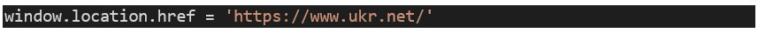

Задача 8
Умова. При старті питаємо у користувача чи хоче він читати новини. Якщо так, то одразу переходимо до сайту Ukr.Net, якщо ні, то через 20 секунд самі переходимо на сайт ukr.net. Для цього через 20 секунд після відкриття треба виконати команду
